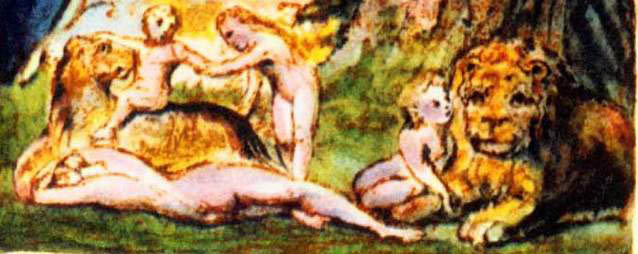

Gider Lyca’nın anne babası,
Dökerken çöller gözyaşı,
Bütün gece keder içinde,
Kale duvarlarından aşağı.
Yorgun ve kederli,
İnleyip boğuk boğuk,
Yedi gün kol kola,
Yürüdüler ıssız yolda.
Yedi gece uyudular,
Koyu gölgeler arasında,
Rüyalarında çocukları,
Vahşi çölde aç açık.
Patikalar boyunca solgun
Saçılır düşlenen imge,
Aç susuz, üzgün, zayıf,
Yankılanır apacı çığlık
Yükselerek huzursuzluktan,
Titreyen kadın razı çoktan,
Acısıyla dermansız ayakların,
Gidemez ki daha uzağa.
Taşıdı adam kadını,
Tükenmiş acıyan kollarla,
Yolları varıncaya,
Yatar durumdaki bir aslana.
Geri dönmek faydasızdı,
Derken ağır yelesi
Mıhladı onları toprağa,
Sonra yaklaştı heybetle
Koklayarak avına.
Fakat yatıştı korkuları,
Ellerini yalayınca,
Durdu sonra, sessizce yanlarında.
Büyük bir sürprizle dolu
Gözlerine baktılar
Ve şaştılar gördükleri,
Altınla kaplı ruha.
Başında bir taç vardı
Omuzlarından aşağı
Sarkmış altın saçları.
Uçup gitti tüm kaygıları.
‘İzleyin beni,’ dedi,
‘Üzmeyin kendinizi,
Sarayımın içinde Lyca,
Yatmış uyumakta.’
Koyuldular gene yola,
Hayalin peşi sıra,
Gördüler ki uyuyan kızları,
Vahşi kaplanlar arasında.
Bugün için ıssız
Küçük bir vadide yaşarlar,
Korkmadan uluyan kurtlardan,
Ne de hırlayan aslanlardan.
